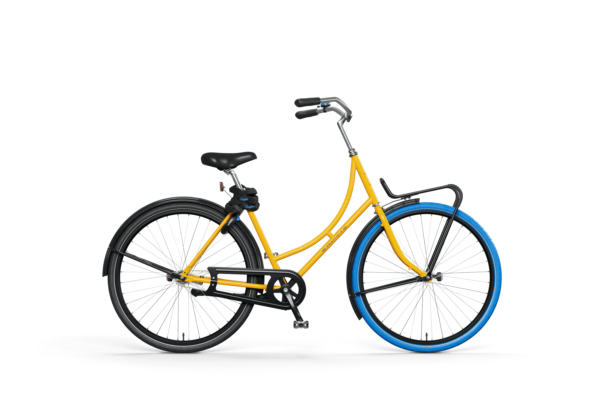
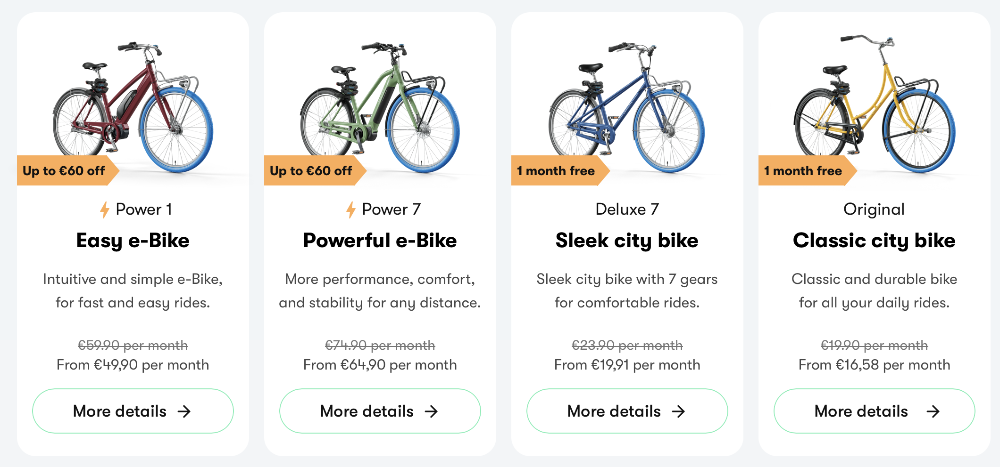
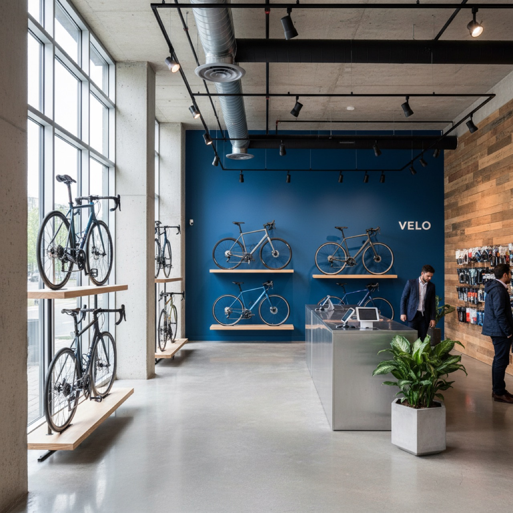
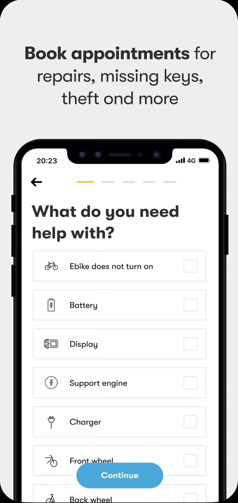
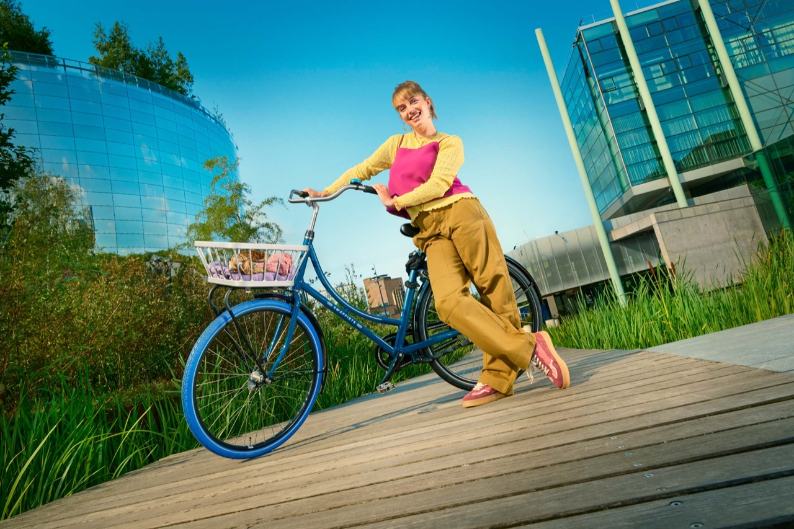
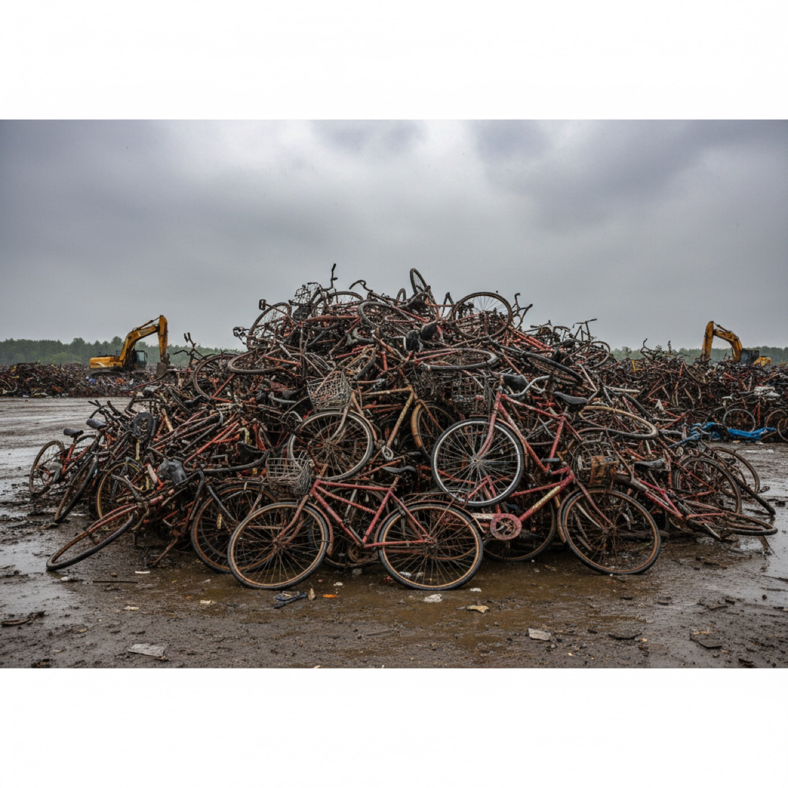
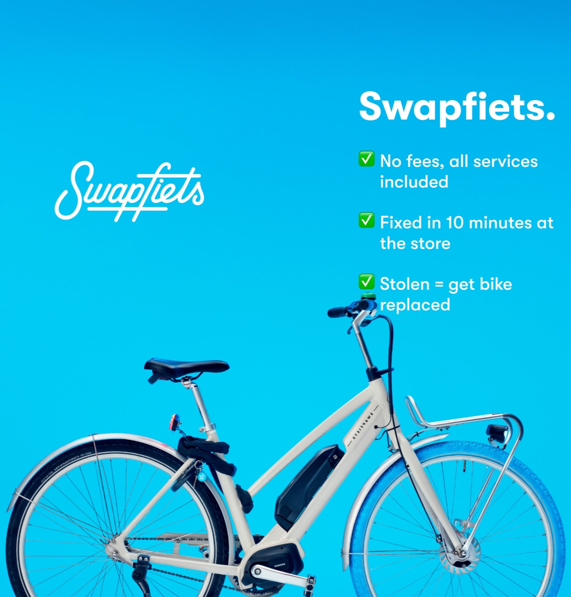
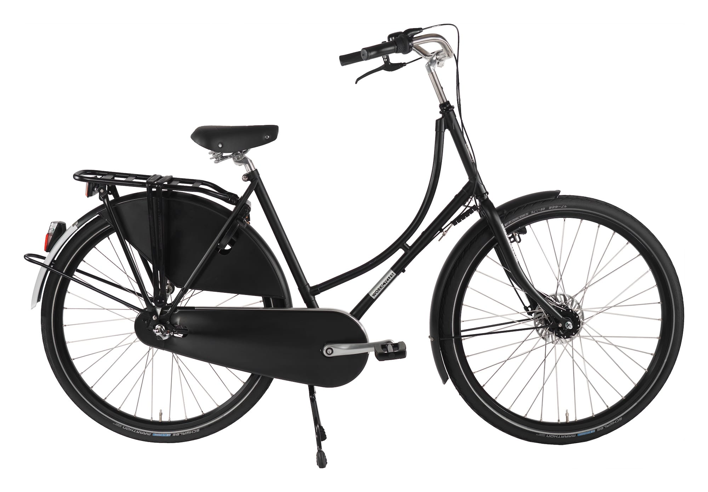

Q2 功能面
05 -- 共享單車泡沫

Problem
Ofo 燒 $22 億破產、Velib' 80% 車被毀
Solution
每台車綁定一位會員 + 企業控制生命週期
Impact
十年無單車墳場，2024 正向現金流
設計分析：問題、解方與反思

荷蘭自行車天堂的黑暗面
竊賊用廂型車整批載走、跨國轉售到歐盟其他國家
社群媒體上 20 歐元就能買到贓車
預算有限，被偷心疼，畢業還要處理車
短期居留買車不划算，不熟修車管道
只要「隨時能騎」，擁有車反而是負擔
「我在陽台上修車，零件散一地，根本是場災難。我跟自己說：下次再壞，我就不修了。」
— Delft 理工大學學生
近 50% 的學生是 Swapfiets 會員
選擇訂閱不是因為買不起車，而是不想再處理車壞掉的那些事
賣越多、丟越多。車廠的利潤建立在不斷消耗與報廢之上。
問題不是消失了，只是你看不見。汙染與碳排被轉移到其他國家和未來世代。
供應鏈拉到幾十個國家，出事了沒人負全責。
自行車進垃圾場
傳統車廠的獲利邏輯：車壞了 = 你再買一台 = 他們賺更多
鋁在澳洲開採、中國組裝
你在荷蘭騎的是一台「看不見代價」的車
塑膠零件需 31 年才降解
碳排後果由下一代承擔
品牌說是代工廠的問題
代工廠說是原料商的問題
最後沒有人負全責
每公斤材料的 CO₂ 排放量
光是英國，每年進掩埋場的自行車橡膠量
回收消耗的能源比製造新的還多
北京承載量 120 萬輛，實際投放 235 萬輛。Ofo 燒 $22 億後破產，1,600 萬人排隊退押金。
Vélib' 兩年後 80% 車被毀或偷走。2025 年仍每週 600 輛失蹤。
oBike 無樁投放，亂停成災，最終退出市場。
你擁有、你珍惜
但所有風險你扛 — 被偷、壞了、報廢
車廠賣完就不管了（線性經濟）
沒人擁有，沒人珍惜
沒人負責它的善終（單車墳場）
平台只管投放不管回收
那有沒有第三種可能？
你不用扛擁有的麻煩，但車也不會變成沒人管的廢鐵 —
從設計、製造、使用到回收，整條鏈都有人負責到底？
Q2 -- 功能面
剛搬到荷蘭 Delft。你需要一台車。

學生折扣 ~€2/月 | Loyal 免註冊費綁 6 月 | Flexibel 隨時取消
= 當月比例金額 + 下月預繳月費 + 註冊費（€19.50 / Loyal 免）


10 分鐘修好
現場修復
修不好？
直接換一台
使用者 x 3 + 永續 x 3
買車、修車、防竊的無限循環
月費訂閱制：壞了換、偷了補、不騎退
54% 會員之前不騎車

車價 + 鎖 + 燈 + 修車 + 被偷 = 不可預測大額支出
固定月費 €12-16.90，什麼都包
平均使用 2 年，年收入 €341 持續成長
荷蘭每年 93 萬輛被偷，好車更容易成為目標
藍色前輪社會性防竊 + 雙鎖系統 + 內建防竊保險
Delft 研究證實防竊效果 + 倫敦用戶心聲：「藍色輪胎讓我安心」

每年 1500 萬輛進垃圾場
所有權保留 → TCO 思維 → 翻新再分配
Deluxe 7 達 88% 循環度，環境衝擊低 35%
Ofo 燒 $22 億破產、Velib' 80% 車被毀
每台車綁定一位會員 + 企業控制生命週期
十年無單車墳場，2024 正向現金流
原生鋁 18kg CO2/kg、44,000 噸橡膠廢棄 -- 自行車的隱藏碳足跡
Hydro 回收鋁 + HKS 閉環回收 + Vittoria 輪胎訂閱
2021 減少 80 萬 kg CO2，零橡膠廢棄物，年創 350 萬歐社會效益
Section 2
使用者怎麼知道該怎麼用？什麼符號在引導操作？

刻意選用「代爾夫特藍」向荷蘭青花瓷致敬。官方註冊為「位置商標」，在荷比盧保護此設計元素。
整座城市都知道藍色前輪＝Swapfiets，車輛難以隱藏或轉手。
「You're part of our family」，把使用者、車、城市包裝成一種生活方式。

直立騎姿、厚胎、低速通勤。腳煞車（coaster brake）符合荷蘭騎乘習慣。
→ 引導使用者將騎車理解為日常移動，而非運動或性能追求。
車架鎖環（ring lock）鎖住後輪。隨車鎖鏈把車鎖在固定物上。Swapfiets 透過使用規範＋寬減賠償鼓勵上鎖。
引導「如何使用這台車」— 日常化、低負擔，同時保有責任感
引導「遇到問題時怎麼做」— 依賴系統，放棄技術介入
一方面讓使用者「像擁有一樣使用」，另一方面引導其「依賴系統」，形成一種既負責任又不真正擁有的使用行為。
符號告訴你「怎麼用」，接下來看——
背後需要什麼勞動、設備和規則來支撐？
Q2 — 技術面
將產品擁有權轉化為訂閱服務。使用者不買車，只付月費換取「隨時有車可騎」的權利。
含當月比例 + 下月預繳 + 註冊費（Flexibel 方案 €19.50）。首期金額較高但之後穩定。
故障透過 App 預約，10 分鐘修不好直接換車。所有磨損維修包含在月費內。
店內快速維修或到府換車。每位 Swapper 都經過訓練，能在 10 分鐘內診斷並決定修復或替換。
退租車全面檢查維修翻新。車輛進入倉庫後經過標準化流程，確保每台再出租的車都符合品質標準。
處理取消、帳單爭議，違停被拖吊時取回車輛。確保每台車都在系統掌控之中。
標誌性藍色前輪
可選置物籃
雙鎖保障安全
無需電池 LED 燈
鞍座車把可調節
低跨點無齒輪設計
其他車型：Deluxe 7、Power 1/7
預約維修、尋找門市、查看發票、取消訂閱。使用者端所有操作的單一入口。
車款比較、費用試算、規則說明。新客戶的主要獲取渠道與資訊平台。
Cookie 與追蹤器（GA、Meta、TikTok 像素、HubSpot）。用於行為分析、再行銷與客戶關係管理。
彈性方案：1 個月預告期
Loyal 方案：綁約 6/12 個月
14 天寬限期非免費試用
隨時雙重上鎖
遺失須出示鑰匙
可加購防盜險（€3.90-9.90/月）
爽約 €20
遺失鑰匙 €25–40
違停拖吊 €40–60
磨損包含在訂閱費中，無需額外支付。
10 分鐘快修；修不好直接換車。
故障 → 修復 → 重新利用 → 回收。
維修數據回饋設計，每代車型迭代改進。
但這個解方會不會造成其他問題？
Q3
藍色前輪辨識度極高，全城皆知。偷了太容易被認出，形成社會性嚇阻。
竊賊更容易鎖定高價目標。Premium 防竊險費用最終轉嫁給使用者。
藍色前輪在「防竊」和「引竊」之間的張力，是一個設計矛盾。
壞了就換 → 不用珍惜？
降低使用者主動維護的動機
你親手修車 → 更珍惜
透過身體參與建立物質連結
「10 分鐘修不好就換車」
維修高峰期備車不足
Trustpilot 負評集中在等待時間
規模越大，物流車隊碳足跡越高
便利性承諾與永續目標的衝突
日常磨損 vs 過度損壞，界線模糊
使用者自行修車可能違反契約
→ 使用者被迫依賴系統，失去自主維修權
€203/年 vs 二手車 €50
循環經濟成為中產階級的消費選擇
→ 永續不該只是付得起的人的特權
Swapfiets 讓永續變得「無感」——不需改變習慣，企業在背後處理所有循環。
不挑戰消費者 → 快速規模化
降低參與門檻，讓永續「方便」
沒有在改變消費文化本身
88% 循環度——是對抗系統，還是漂綠？
每一個設計解方，同時也是一個新的設計問題。
Swapfiets 證明了讓產品活更久可以同時是好生意和好設計。但當永續變得太「方便」，我們是否正在失去對物質世界的真實感受？
Swapfiets 循環經濟商業模式設計